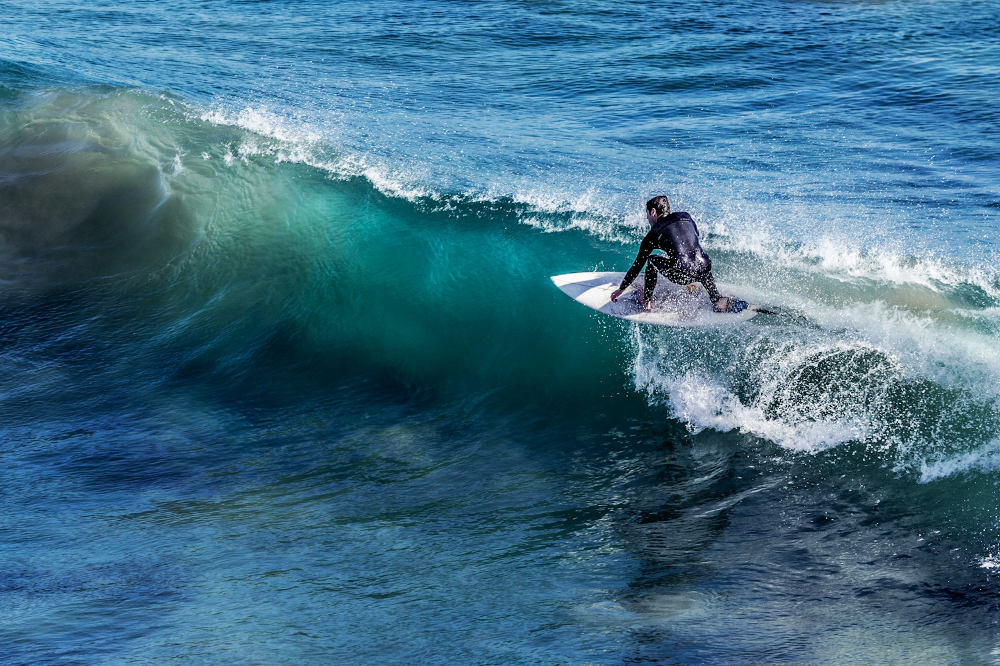

Максим
Главный инструктор
Канарские острова — место встречи океана, солнца и ветра. Здесь можно познакомиться с серфингом и почувствовать свободу движения на волне.
В школе WAWE начинающие учатся уверенно обращаться с доской, а опытные серферы совершенствуют технику. Занятия начинаются с разминки и знакомства с условиями на споте.
На первых тренировках мы разбираем стойку, греблю и правила безопасности. Инструктор помогает подобрать оборудование под уровень подготовки.
Наша цель — сделать знакомство с океаном понятным и интересным. В небольших группах каждому хватает внимания и времени на практику.
Теория дополняет занятия в воде: ученики узнают, как образуются волны и как выбирать место для катания.
После тренировки остаётся время для прогулок, общения и знакомства с островом.
Первая пойманная волна запоминается надолго. На пути к ней важны терпение, практика и поддержка команды.
Мы начинаем с простых упражнений на берегу, затем переносим навыки в воду. Каждое занятие помогает увереннее чувствовать доску.
Океан меняется каждый день. Наблюдать за ним и учиться понимать его — часть серфинга.

Главный инструктор
Инструктор по серфингу
Координатор школы